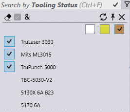
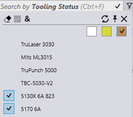

Part Library Filter
Filtering parts by tooling status

Select Tooling Status search field to filter parts by their tooling status. The dropdown displays states as colored checkboxes and machines where White is OK, Orange is Error and Yellow is a Warning state. The Apply All (&) button is enabled in this case to apply the filter condition for all selected machines.
| Filter | Description |
|---|---|
|
Displays parts which have at least one tooling error |
|
Displays parts which cannot be cut using TruLaser 3030 machine |
 |
Cut Infeasible: These parts cannot be cut on any cutting machine. (Notice “&” selection here) |
|
Bending Errors: Parts cannot be produced as there is no valid bend tooling |
 |
Panel bend ONLY: These parts can be processed only because there is a valid panel bend tooling. These cannot be done on any of the press breaks. |


Filtering parts by Bend mount
Select Bend Mounts field to search parts by bend mount.
-
The dropdown, for this field, displays list of bend tools. Select a tool to find list of parts using this tool
-
The tool list in the dropdown can be narrowed down by typing in the tool name, tool type (punch, gooseneck, radius etc.,) and tool description
-
Select multiple tools and apply ALL (&) modifier to list all parts using both tools.
-
Select a part and double click to open part detail to highlight other tools used in the part for ALL bending machines. The tool description is updated with the mount details.
-
Double click the machine to highlight the bend tools used in the selected part for the selected machine.
Placing the mouse over the bend mount filter button displays tooltip with selected tool icons. A square bracket around the tool count means “ALL” match condition whereas the small bracket means ANY match.

Filtering parts by used tools
This is identical to filtering based on used mounts except:
-
The tool icons are drawn in a proportional size (not exactly proportion).
-
When the tooling preview is open, moving the mouse over the highlighted tools highlights the corresponding tooling in the preview pane.
Filtering parts by state
Library Parts can be filtered by State now. The options display list of ALL applicable states and therefore it changes depending on list of library parts and their current states. Pick Material Missing to list parts in unresolved material state.

Filtering parts by Error codes
In combination with the status and Machines now specific tooling Error codes can be used in search by Tooling Status.
The image below shows the search scenario : Overload tooling errors for Machine 5170 6A
The error list displays the applicable errors for the machine and status selection. It refreshes on machine and status selection change to make the search more accurate. So, if you select warning status for a punch machine, only the available punch warnings are displayed in the error list.
Suppressed State filter
Often Part toolings are suppressed due to over – sized geometry or thickness. The tooling is also suppressed if it is specifically denied by a CAD route. JFY+ displays the suppress reason in the tooling tooltip. Also, such parts can be searched using the newly added Suppressed state box in the Tooling Status search menu.